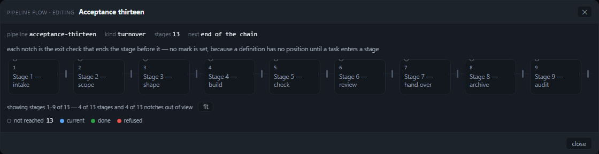
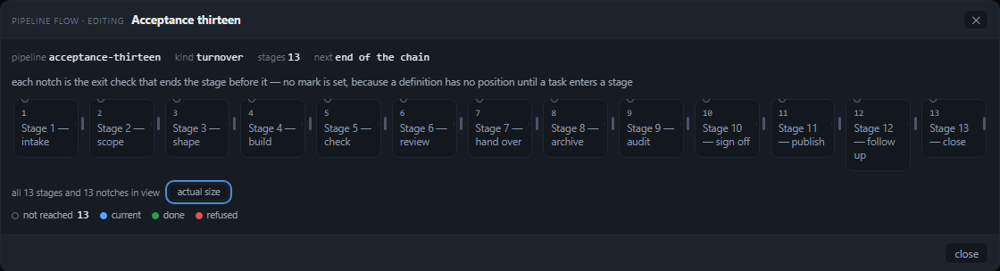
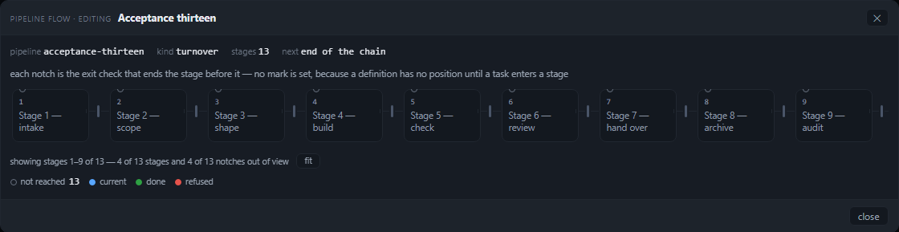
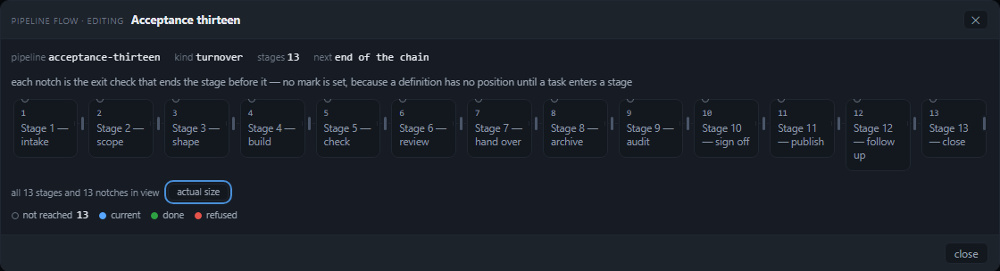
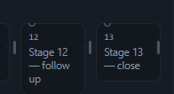

Round 5B left six judge lines red in the thirteen-stage case — four columns and their notches outside a
1094 px scroller, with no count of what was missing and no way to bring it in. This round adds the count (a measurement
of the painted rects, re-read on every scroll) and fit (the same grid, one step narrower), and the six lines
are green at both widths with the one-, two-, three- and seven-stage numbers untouched.
Round 5B read 134/140 and 129/129 on the same harness. The six red lines were V1, V2 and V3 in the thirteen-stage case at both viewports; they are green on the fitted drawing, and the unfitted drawing is judged on the count it now prints in both states. The 1, 2, 3 and 7-stage cases read exactly as 5B left them: 826 px centred at 146/146, 1094/1094 with all seven notches inside.
At thirteen stages the unfitted drawing is 1562 px of content in a 1094 px scroller — stages 10–13 and their four notches are out of view, and the scroller now says so:
showing stages 1–9 of 13 — 4 of 13 stages and 4 of 13 notches out of viewScrolling to the far end changes the sentence because the sentence is a measurement, not a constant:
showing stages 5–13 of 13 — 4 of 13 stages and 3 of 13 notches out of viewAnd the press the plan calls fit brings the whole chain in, at both widths:
all 13 stages and 13 notches in view · scrollWidth 1094 = clientWidth 1094 ·
13 columns of 72.8 px in a 1090 px trackThe count is not a hidden implement: it is a line under the drawing with the control beside it, and it stays there while fitted. A pass that greened the case by making the count disappear would fail N3.
tools/verify-pipeline-flow-visible.mjs is 5A's harness, extended rather than replaced. It boots a
throwaway panel of this checkout — its own PANEL_CONFIG, jobs store, pipelines.json, an
ephemeral port, a dead apiServer, the board assistant off — and drives it with Chromium. Route B is
Settings → Pipeline → a definition → open the flow; route A is a queue row's ⇢ press. Every value is read from
the DOM in the page: getBoundingClientRect against the scroller's client box and the track's own box,
scrollWidth/clientWidth, pairwise intersections, the arc's ends against the stage centres it
joins, the painted colours as a contrast ratio, and the computed outline of whatever the keyboard focused.
The thirteen-stage case now has four lines of its own, judged in the state they describe:
solid/2px). The scroller is Chromium's own tab stop, so the press is the third stop, and the run reads
where it lands.all 13 stages and 13 notches in view,
while V1–V6, C1–C4 and C8 judge the fitted drawing like every other case.The harness itself had a measurement bug that this round had to fix before it could judge a scrolled drawing: its
r() helper names an element's left edge x (it returns a rect, not a DOMRect), and V1/V2 read
rect.left — undefined < sr.left is false, so a drawing scrolled LEFT had none of its
clipped stages counted as clipped. The count's scrolled case is the first line that scrolls a drawing left; the notch
check now reads the left edge too. That is a gate defect that predates this branch, corrected in
tools/verify-pipeline-flow-visible.mjs.
| case | stages | track / body | dead space L / R | column | scroll / client | verdict |
|---|---|---|---|---|---|---|
| route B · local | 1 | 400 / 1118 | 359 / 359 | 400 | 1094 / 1094 | PASS |
| route B · investigate | 2 | 826 / 1118 | 146 / 146 | 400 | 1094 / 1094 | PASS |
| route B · turnover | 3 | 1090 / 1118 | 14 / 14 | 346 | 1094 / 1094 | PASS |
| route B · sefl-review-loop | 7 | 1090 / 1118 | 14 / 14 | 133.4 | 1094 / 1094 | PASS · 7 notches inside |
| route B · acceptance-thirteen, unfitted | 13 | 1090 / 1118 | 14 / 14 | 96 | 1562 / 1094 | counted: 4 stages + 4 notches out |
| route B · acceptance-thirteen, scrolled to 468 | 13 | 1090 / 1118 | 14 / 14 | 96 | 1562 / 1094 | counted: 4 stages + 3 notches out, 5–13 showing |
| route B · acceptance-thirteen, fitted | 13 | 1090 / 1118 | 14 / 14 | 72.8 | 1094 / 1094 | PASS · 13/13 stages and notches inside |
| route A · poc-flow at S3 | 5 | 1090 / 1118 | 14 / 14 | 197.2 | 1094 / 1094 | PASS |
“Dead space” is the body's edge minus the track's edge, per side. The fitted card is 1120×304.6 at both viewports; the unfitted card is 1120×289.7. Every case is identical at 1280×800 and 1821×700 — the card is capped at 1120 px, so the two widths differ in where the card sits, not in the drawing.
viewCount(root) public/pipeline-flow.js:435 reads the scroller's own
getBoundingClientRect() and scans every .pflow-node and .pflow-notch: an item is
out when its right edge passes the box's right edge or its left edge falls behind the box's left edge, and the side it
counts for is the side the reader has to scroll toward. countText(view)
public/pipeline-flow.js:419 writes the one sentence; nothing else in the page composes it.
The row and the control are emitted by statusHtml() public/pipeline-flow.js:482
and the row starts hidden — the measurement unhides it.
readView(doc) public/pipeline-modal.js:187 puts that sentence into the
element, sets data-out, and hides both the row and the control when the drawing fits and fit
is off. wireFlow(doc) public/pipeline-modal.js:202 attaches the passive
scroll listener and a resize listener (the card is 96vw up to its cap, so a
window resize changes how much of a long definition fits), and hands back a cleanup that paintFlow and
close() both call — the watcher is per painting, not per page.
fit is the same width function, one step narrowerThe track's width policy has always been the CSS custom properties --pflow-minw and
--pflow-gap, read by the grid, the connector, the notch and the arc geometry. fit sets them
once on the root — .pflow[data-fit="1"] { --pflow-gap: 12px; --pflow-minw: 56px; }
public/style.css:4001 — so thirteen columns share the 1090 px track at 72.8 px each and the
arcs cannot drift from the stages they join. The state lives in the dialog
(state.fit public/pipeline-modal.js:310 resets it on open), survives a position
or motion re-render, and the press is the control's own: data-fit goes to 1, the label reads
actual size, and pressing that restores the 96 px floor. It is a press, not a resize: nothing re-lays out until
the reader asks, which is the plan's C8 trade stated openly — the whole chain for the readable column width.
.pflow-status[hidden], .pflow-fit[hidden] { display: none; }
public/style.css:4083 is what keeps a one-, two-, three- or seven-stage drawing exactly as
5B left it: the row is hidden until something is out of view, and the control is hidden with it. The thirteen fitted
case keeps both because fit is on — the count is never the thing the fix hides.
The page closes the Settings window for any click whose path does not include it
(public/app.js:22543, the #settings outside-press handler), and this dialog is
opened from Settings. Round 5A stopped the backdrop press; a press on a control inside the card still reached
that handler, so the harness saw Settings close under it the moment a control lived there. The card now stops its own
clicks public/pipeline-modal.js:419 — bound on the card, not as a capture stop on document,
because capture at document runs before the button's own handler and the press would never arrive at all.
Each is the harness's own card capture, taken in the same run as the numbers above, at 1280×800 and 1821×700, both fitted and unfitted.





cd C:/ProjectDevelopment/agent-worktree-gui/.worktrees/thirteen-stages-the-last-97f3dd node tools/verify-pipeline-flow-visible.mjs --strict --json out.json --shots shots # 148/148 judge lines, 141/141 contract checks, exit 0 node tools/verify-pipeline-flow.mjs # 49/49 node --test test/*.test.js # 1406 tests, 1406 pass, 0 fail
The shots on this page are the harness's own, copied beside it under
docs/reviews/pipeline-flow-visual-round-5c/.
viewCount returns null).fit is a press and resets on the next open; a reader who wants
the whole chain presses it each time. That is deliberate: an automatic re-layout would spend the readable width
without being asked.